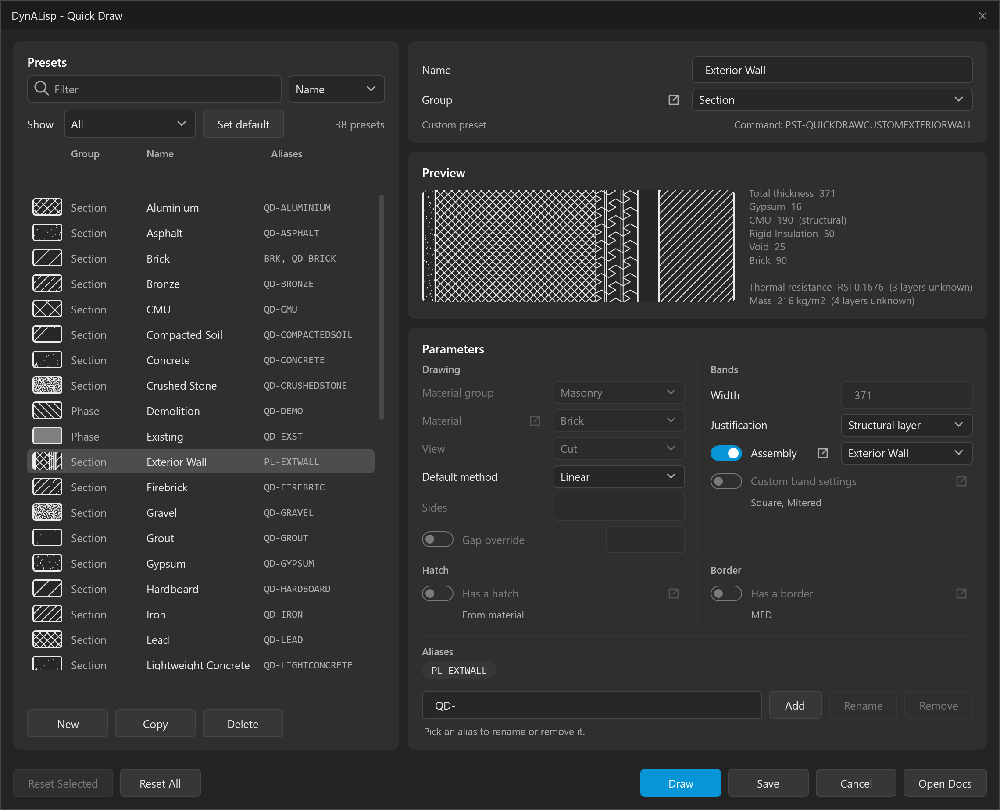

Quick Draw
| Function Syntax | DYL-QUICKDRAW (Quick Draw window) + 35 preset commands – see Commands |
| Requires | AutoCAD 2025 or later for Windows |
| Licence | GNU General Public License v3 |
Program Description
Draw and hatch in one go: the outline, its layer and its hatch at the right scale. Thirty-five presets come ready, concrete, brick, insulation, the phase screens, and you make your own.
How To Use
- Type a preset, QD-BRICK, or pick it in the Quick Draw Gallery.
- Pick how to draw it, then draw the outline: the hatch follows.
- To change or add a preset, type Dyl-QuickDraw.
Quick Draw Window
Type Dyl-QuickDraw to open it.
Presets
- Filter – type part of a name to shorten the list. The list beside it sorts by name or by group.
- Show – every preset, or one group. Set default opens the window on that group next time.
- The list – click a preset to see it. Select several to change them together.
- New, Copy, Delete – add a preset, copy the one selected, delete one of yours.
Name and Group
- Name – as the list and the gallery show it.
- Group – where it is filed. The button beside it opens Preset Groups.
- Under them: whether the preset is as shipped, modified or yours, and the command that draws it.
Preview
The hatch as it will be drawn, or the layers of an assembly with its thickness.
Parameters
- Material – what it is made of, which gives its hatch. Material group shortens the list; the button opens Materials. View: Cut in a plan or section, Surface in an elevation.
- Default method – how it is drawn (below), or asked each time.
- Sides – for a polygon, its number of sides. Gap override – for Shrinkwrap, the largest gap it closes. Empty, asked when drawn.
- Width and Justification – for a band: 100, or 100,150,200 to choose each time.
- Assembly – a band of several layers, like a wall (below).
- Custom band settings – the ends and corners of a band: Band Settings.
- Has a hatch – its layer and look: Hatch Settings.
- Has a border – keeps the outline: Border Settings.
- Aliases – the short names that draw it. Type one and click Add; pick one to Rename or Remove it.
Buttons
- Reset Selected – puts the selected presets back as shipped. Reset All does it for every preset shipped; yours are kept.
- Draw saves and draws the preset shown, Save saves, Cancel drops the changes.
- Open Docs – this page.
Drawing Scale
A hatch is set for 1:1. With Adaptive scaling, it grows with the scale of the drawing: x50 at 1:50. Set the scale with Switch Drawing Scale. A hatch already drawn keeps its scale.
Default Method
| Method | Outline |
|---|---|
| Polyline, Rectangle, Circle, Polygon, Ellipse | Draw it as usual. |
| Shrinkwrap | Select objects: an outline goes around them (Shrinkwrap). |
| Pick internal points | Click inside closed areas. |
| Select closed objects | Use outlines already drawn. |
| Linear | Draw a line: a band of the width follows it, its hatch turning with it. |
| Offset | Pick objects and a side, as with OFFSET: a band follows each one. |
| Replace hatches | Give the material to hatches already drawn. |
Ends and Corners
How the bands of Linear and Offset end and turn, set in Band Settings, or with Ends and Corners while drawing.
Ends
Corners
Joints and Hatch
Assemblies
An assembly draws a band of several layers side by side, like a wall: gypsum, studs and insulation, sheathing, air space, brick. Check Assembly and pick it; make it in Assembly Presets.

- Each layer has its own material; every layer turns the corners together.
- Flip puts the layers the other way, to draw from the other face.
Known Limitations
- A few patterns (CONCRETE_C, WOOD_*...) need their pattern file in AutoCAD's folders.
- A layer already there keeps its look, unless you say to update it (see Layer Keys).
Command Names And Aliases
The short names are aliases of the command: change them in Dyl-Suite. The rows marked ↳ are its variants, run by their short name.
| Command | Aliases | Name |
|---|---|---|
| Dyl-QuickDraw | – | Quick Draw |
| ↳ QDG | – | Quick Draw Gallery |
| ↳ QD-DEMO | – | Quick Draw Demolition |
| ↳ QD-XNOT | – | Quick Draw Not In Contract |
| ↳ QD-EXST | – | Quick Draw Existing |
| ↳ QD-CONCRETE | – | Quick Draw Concrete |
| ↳ QD-LIGHTCONCRETE | – | Quick Draw Lightweight Concrete |
| ↳ QD-MORTAR | – | Quick Draw Mortar |
| ↳ QD-BRICK | – | Quick Draw Brick |
| ↳ QD-STONE | – | Quick Draw Stone |
| ↳ QD-CMU | – | Quick Draw CMU |
| ↳ QD-FIREBRIC | – | Quick Draw Firebrick |
| ↳ QD-MARBLE | – | Quick Draw Marble |
| ↳ QD-GROUT | – | Quick Draw Grout |
| ↳ QD-IRON | – | Quick Draw Iron |
| ↳ QD-STEEL | – | Quick Draw Steel |
| ↳ QD-BRONZE | – | Quick Draw Bronze |
| ↳ QD-LEAD | – | Quick Draw Lead |
| ↳ QD-ALUMINIUM | – | Quick Draw Aluminium |
| ↳ QD-PLYWOOD | – | Quick Draw Plywood |
| ↳ QD-WOODPLANK | – | Quick Draw Wood Plank |
| ↳ QD-WOODFRAME | – | Quick Draw Wood Frame |
| ↳ QD-PARTICLEBOARD | – | Quick Draw Particleboard |
| ↳ QD-HARDBOARD | – | Quick Draw Hardboard |
| ↳ QD-PLASTIC | – | Quick Draw Plastic |
| ↳ QD-LOOSEINSULATION | – | Quick Draw Loose Insulation |
| ↳ QD-SPRAYINSULATION | – | Quick Draw Spray Insulation |
| ↳ QD-RIGIDINSULATION | – | Quick Draw Rigid Insulation |
| ↳ QD-GYPSUM | – | Quick Draw Gypsum |
| ↳ QD-PLASTER | – | Quick Draw Plaster |
| ↳ QD-COMPACTEDSOIL | – | Quick Draw Compacted Soil |
| ↳ QD-TOPSOIL | – | Quick Draw Topsoil |
| ↳ QD-UNDISTURBEDSOIL | – | Quick Draw Undisturbed Soil |
| ↳ QD-SAND | – | Quick Draw Sand |
| ↳ QD-ASPHALT | – | Quick Draw Asphalt |
| ↳ QD-GRAVEL | – | Quick Draw Gravel |
| ↳ QD-CRUSHEDSTONE | – | Quick Draw Crushed Stone |